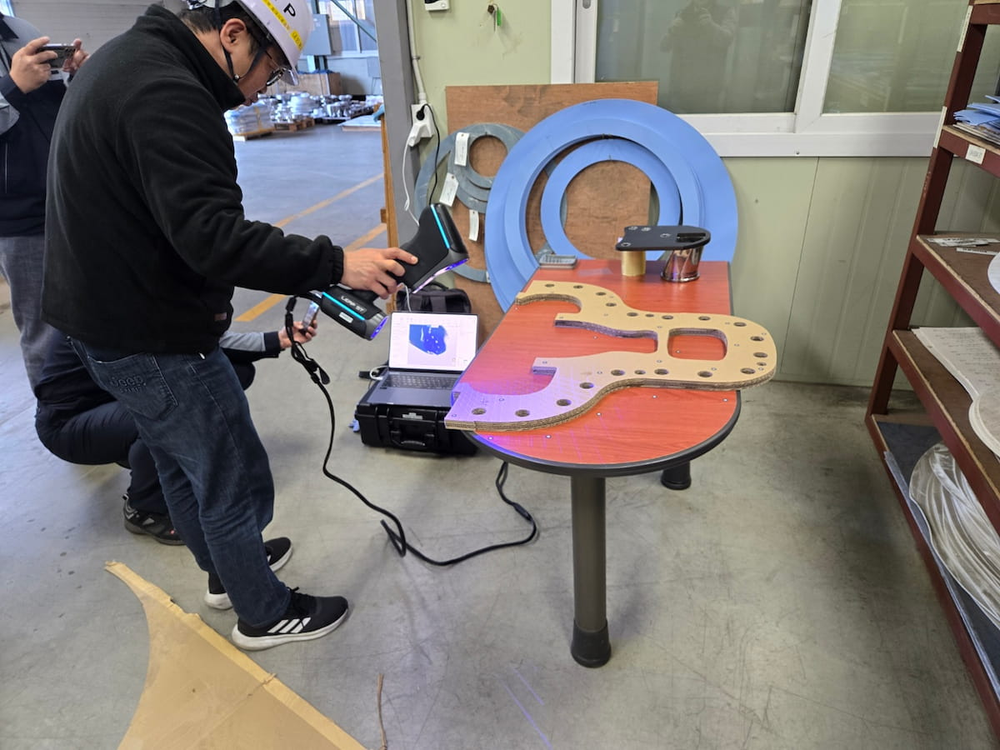
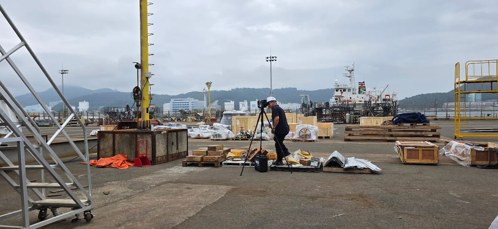

제조 · 형상 측정
자유곡면 대상물 3차원 측정
복잡한 곡면 형상을 비접촉 방식으로 측정하여 3D 데이터 구축과 형상 검토를 지원한 사례입니다.
실제 현장에서 수행한 3D 측정·스캐닝 사례와 업무별 솔루션을 소개합니다.
FIELD APPLICATIONS
KTM Partners가 실제 현장에서 수행한 3D 측정·스캐닝 사례를 작업 목적과 활용 장비를 중심으로 소개합니다.
제조 · 형상 측정
복잡한 곡면 형상을 비접촉 방식으로 측정하여 3D 데이터 구축과 형상 검토를 지원한 사례입니다.

제조 · 역설계
휴대형 3D 스캐너로 부품 형상을 취득하여 시제품 검토와 역설계에 활용할 데이터를 구축한 사례입니다.

조선 · 대형 구조물
넓은 현장과 대형 구조물의 공간 정보를 스캔하여 현황 기록과 후속 설계에 활용할 데이터를 취득한 사례입니다.

중공업 · 대형 부품
대형 곡면 부품의 형상을 현장에서 측정하여 치수 검토와 3D 데이터 구축을 지원한 사례입니다.
SOLUTIONS BY TASK
프로젝트 목적에 따라 적합한 측정 장비와 소프트웨어를 함께 구성할 수 있습니다.
기존 시설과 플랜트의 실제 형상을 3D 데이터로 구축하여 설계와 현장의 차이를 확인합니다.
3D 스캔 데이터와 설계 데이터를 비교하여 시공 오차를 확인하고 품질 검증을 지원합니다.
제조 부품의 치수와 형상을 측정하여 CAD 데이터와 비교하고 품질 데이터를 관리합니다.
대형 구조물, 설비, 조립품의 위치와 정렬 상태를 고정밀로 측정하고 검증합니다.
기존 제품의 형상 데이터를 취득하여 CAD 모델 생성, 설계 개선 및 제품 개발에 활용합니다.
측정 결과를 분석하고 보고서로 정리하여 품질관리와 의사결정에 활용할 수 있도록 지원합니다.
KTM Partners가 현장의 목적과 조건을 검토하여 적합한 장비, 소프트웨어와 측정 방식을 제안해드립니다.
프로젝트 상담하기 →